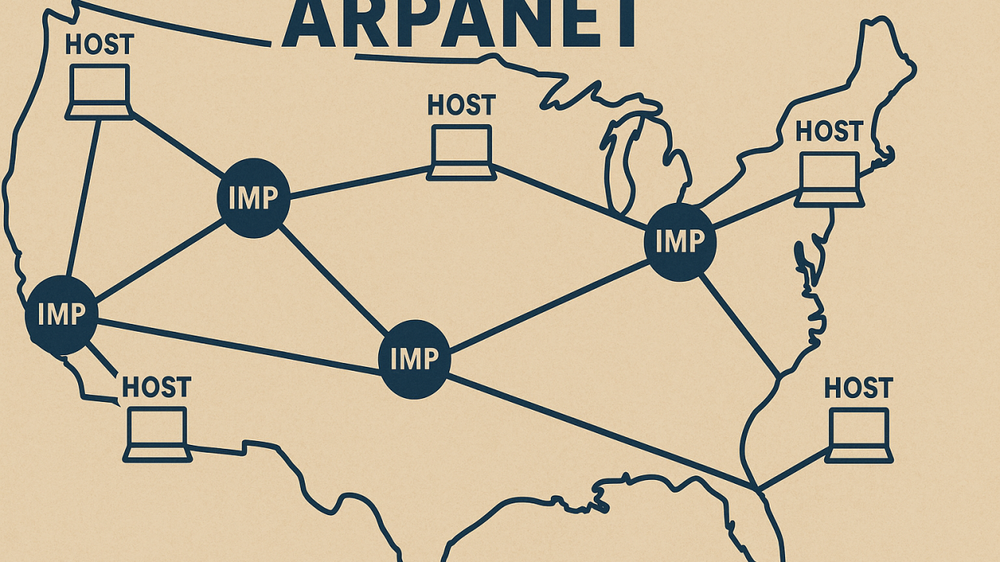
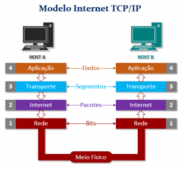
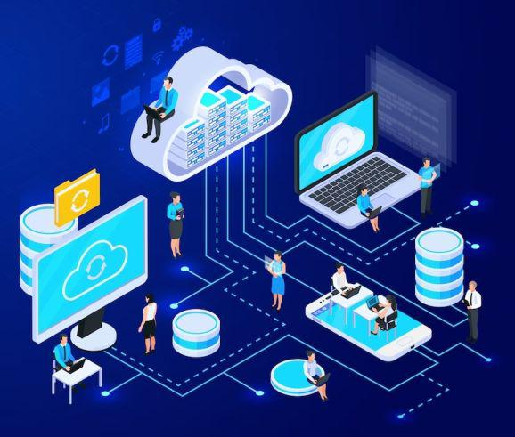

-A evolução das redes de computadores é uma história de inovação e transformação que remonta às primeiras tentativas de conectar computadores para compartilhar informações.
-Desde os primórdios da ARPANET, a primeira rede de computadores, até a era moderna da internet, as tecnologias de redes têm desempenhado um papel crucial na forma como nos comunicamos, trabalhamos e vivemos.

-A ARPANET, desenvolvida na década de 1960 pelo Departamento de Defesa dos Estados Unidos, foi a primeira rede de computadores a utilizar o protocolo TCP/IP, que se tornou a base para a internet moderna. A ARPANET permitiu a comunicação entre computadores em diferentes locais, estabelecendo as bases para a troca de informações em larga escala.

-Ao longo dos anos, os protocolos de rede evoluíram para atender às crescentes demandas de comunicação. O TCP/IP tornou-se o padrão dominante, permitindo a interconexão de redes em todo o mundo. Além disso, surgiram protocolos como HTTP, FTP e SMTP, que facilitaram a transferência de dados e a comunicação entre computadores.

-Com a popularização da internet na década de 1990, as redes de computadores se expandiram rapidamente. A internet tornou-se uma parte essencial da vida cotidiana, permitindo o acesso a informações, comunicação instantânea e o surgimento de novas formas de negócios e entretenimento online.

-A introdução de redes sem fio, como Wi-Fi e redes móveis, revolucionou a forma como nos conectamos. A mobilidade tornou-se uma característica fundamental das redes de computadores, permitindo que as pessoas acessem a internet e se comuniquem de qualquer lugar, a qualquer momento.

-O futuro das redes de computadores promete ser ainda mais emocionante, com avanços em tecnologias como 5G, computação em nuvem, inteligência artificial e Internet das Coisas (IoT). Essas inovações estão transformando a forma como interagimos com a tecnologia e abrindo novas possibilidades para a comunicação e o compartilhamento de informações.

Além da cronologia, a arquitetura das redes possui camadas de complexidade que garantem seu funcionamento:
-Em resumo, a evolução das tecnologias de redes de computadores é uma história de inovação contínua que tem moldado a forma como nos conectamos e interagimos com o mundo digital.
-Desde os primeiros dias da ARPANET até as tecnologias avançadas de hoje, as redes de computadores continuam a desempenhar um papel fundamental em nossas vidas.